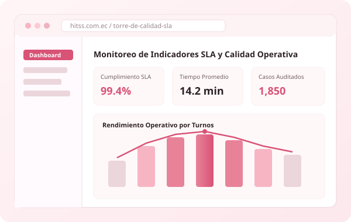

Hitss Ecuador • Área Operaciones
Torre de Calidad y Monitoreo SLA
Supervisión de indicadores de calidad y desempeño de la gestión operativa. Generación de reportes ejecutivos, análisis de tiempos de atención y estricto cumplimiento de los acuerdos de nivel de servicio (SLAs), identificando oportunidades de mejora continua.
Torre de Calidad
Indicadores SLA
Excel Avanzado
Mejora Continua